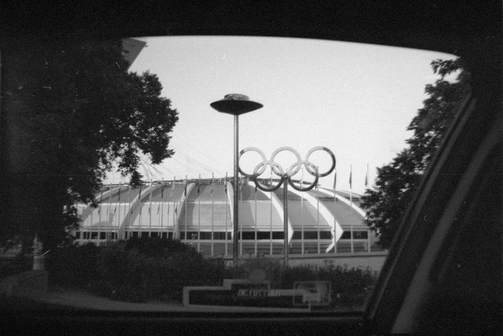
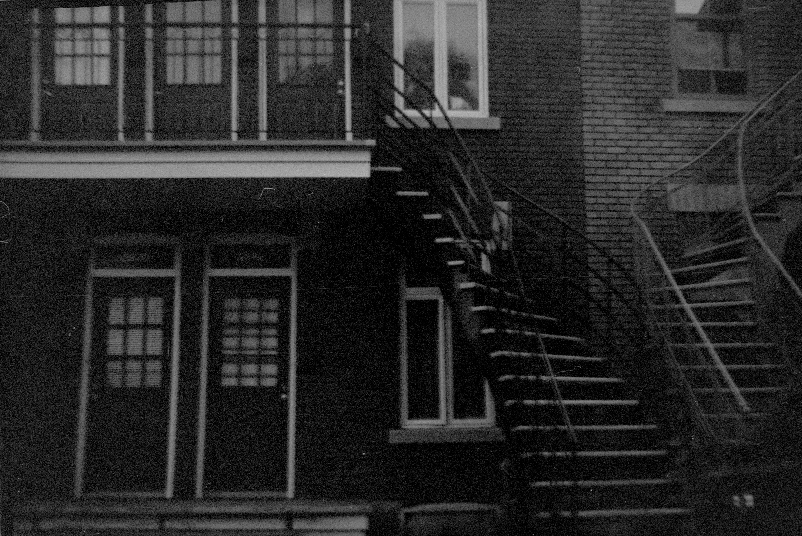
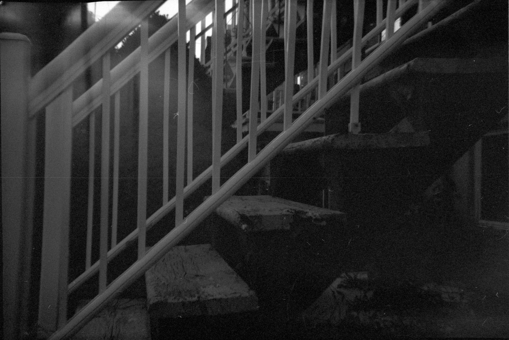
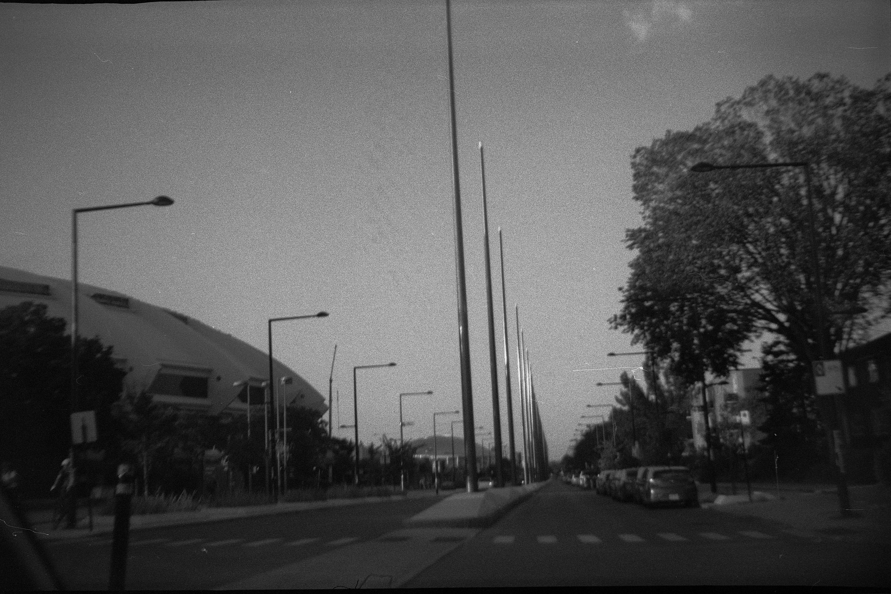
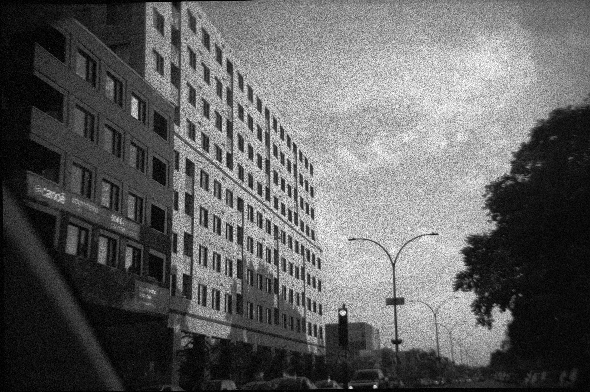
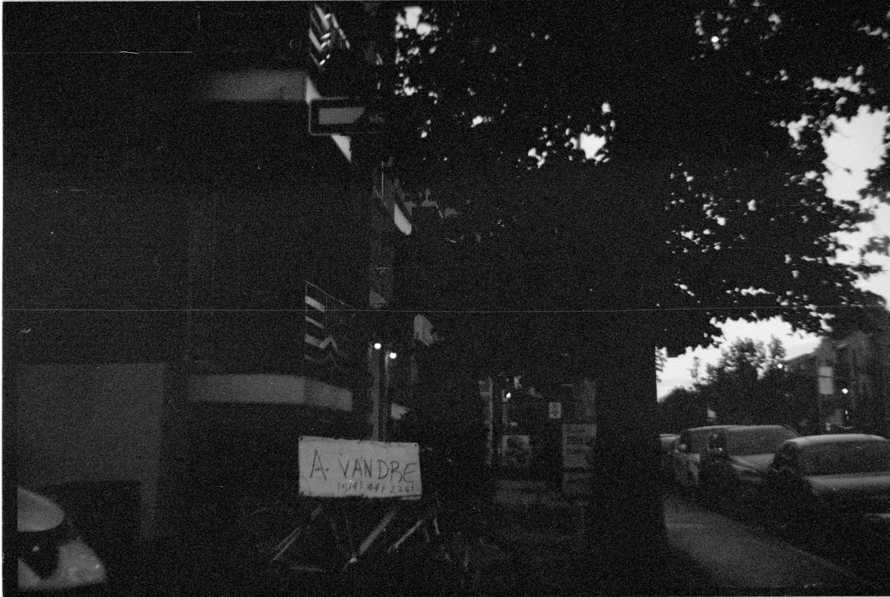
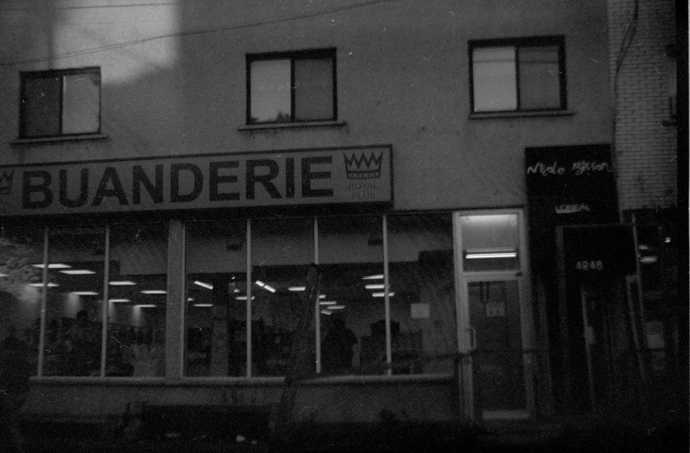
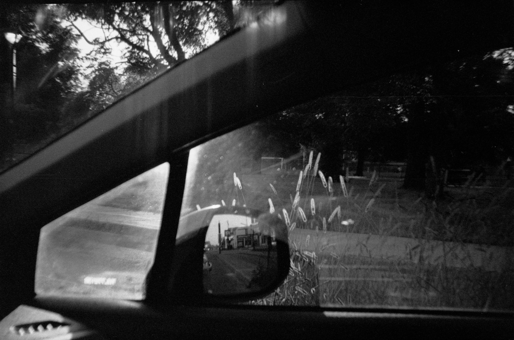

Temporally Ambiguous Photos
My version of “sketching” involved driving around and taking photos on this old plastic camera that my mom found with some of my grandparents’ things, using film that expired in 1986. I turned my attention toward scenes that felt sort of temporally ambiguous--taking photos that felt like they could have been taken around the time that this film expired, possibly.
I considered these “sketches” because the images formed from the expired film only produced a sort of "trace" of what was photographed (they are not rendered in full detail. They have this unfinished, imperfect, sketchy quality to them--where, for example, the grain and the fogging come together to suggest form or value in ways that feel similar to the way that marks accumulate on a page form a sketch).